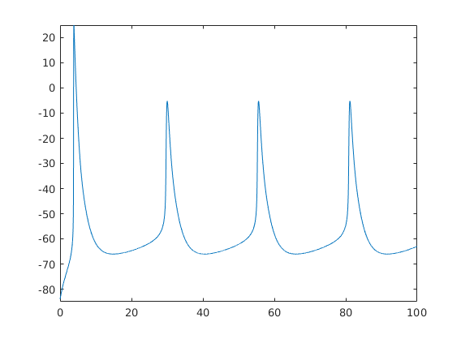

This is a Morris-Lecar implementation of the
Schwarz JR, Reid G, Bostock H (1995) Action potentials and membrane
currents in the human node of Ranvier. Pflugers Arch 430:283-92
http://dx.doi.org/10.1007/bf00374660
model that was originally in an HH style of modeling. This model was
contributed by Hugo Zeberg: hugo.zeberg at ki.se
To run type the name of the script at the MATLAB command prompt:
nerve2d
to generate an image similar to figure 6Eb in the paper:
